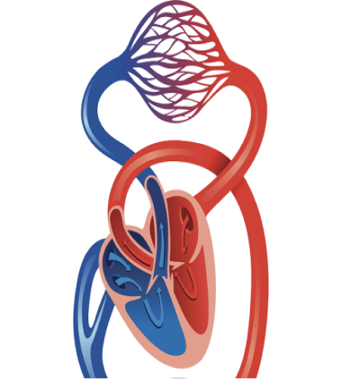
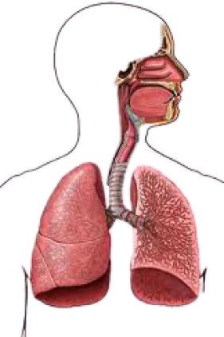
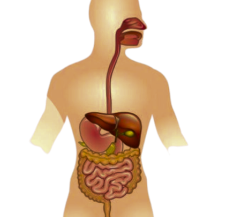

GAMBAR ORGAN
Jantung adalah komponen paling penting dalam sirkulasi darah di tubuh manusia. Jantung berfungsi untuk memompa darah sehingga dapat mengalir ke seluruh tubuh. Jantung terdiri atas empat ruangan, yaitu serambi kanan, serambi kiri, bilik kanan, dan bilik kiri. Serambi adalah ruangan untuk menerima dan menampung darah yang masuk jantung. Bilik adalah ruang untuk menampung darah yang akan dipompakan ke seluruh tubuh. Bilik berfungsi untuk memompakan darah ke seluruh tubuh. Bilik memiliki dinding yang tebal. Serambi berfungsi untuk memompa darah menuju bilik. Dinding serambi lebih tipis daripada dinding bilik. Agar aliran darah tetap satu arah, maka ada klep (katup) yang terletak diantara serambi dan bilik. Katup inilah yang mencegah darah yang sudah masuk ke bilik untuk kembali serambi.
 